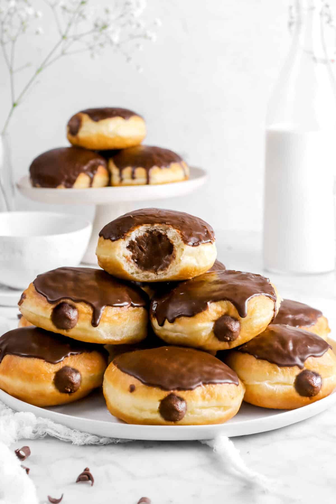

Skip image
Doughnuts

"Every day, once a day, you should eat a doughnut. Or two. Or six." - Twin Peaks sign
Indulge in the sinfully delicious Twin Peaks Doughnuts, a recipe inspired by the iconic TV series. These delectable treats are a perfect blend of fluffy texture and delightful flavors. The doughnuts, reminiscent of the show's mysterious and eccentric atmosphere, are made with a light and airy dough that is fried to golden perfection. Whether enjoyed with a damn fine cup of coffee or as a standalone delight, Twin Peaks Doughnuts are a delightful homage to the beloved series that will leave you craving for more.
Ingredients:
- All-purpose flour: This is the main ingredient for the doughnut batter.
- Sugar: Adds sweetness to the doughnut batter.
- Baking powder: Helps the doughnuts rise and become fluffy.
- Salt: Enhances the overall flavor of the doughnuts.
- Spices (optional): Optional spices such as cinnamon or nutmeg can be added for additional flavor.
- Milk: Provides moisture and richness to the doughnut batter.
- Butter: Adds flavor and richness to the doughnut batter.
- Eggs: Help bind the ingredients together and contribute to the texture of the doughnuts.
- Vanilla extract: Adds a pleasant vanilla flavor to the doughnuts.
- Optional toppings and glazes: Depending on your preferences, you may want to have toppings such as sprinkles, powdered sugar, chocolate glaze, or maple glaze.
Steps:
- Preheat the oven: Preheat your oven to 350°F (175°C). This temperature may vary depending on your oven, so adjust accordingly.
- Prepare the doughnut batter: In a mixing bowl, combine the all-purpose flour, sugar, baking powder, salt, and any desired spices (e.g., cinnamon, nutmeg). Mix well to ensure even distribution of ingredients.
- In a separate bowl, whisk together the milk, melted butter, eggs, and vanilla extract until well combined.
- Add the wet ingredients to the dry ingredients: Pour the wet ingredients into the bowl with the dry ingredients. Stir gently until the mixture is just combined. Be careful not to overmix, as it can result in dense doughnuts.
- Fill the doughnut pan: Grease a doughnut pan with cooking spray or butter. Spoon or pipe the batter into the prepared pan, filling each doughnut cavity about two-thirds full.
- Bake the doughnuts: Place the pan in the preheated oven and bake for approximately 12-15 minutes or until the doughnuts are golden brown and a toothpick inserted into the center comes out clean.
- Cool the doughnuts: Remove the doughnut pan from the oven and allow the doughnuts to cool in the pan for a few minutes. Then transfer them to a wire rack to cool completely.
- Glaze or decorate (optional): Once the doughnuts have cooled, you can glaze them with your preferred glaze (e.g., chocolate, vanilla, maple) or decorate them with toppings like sprinkles, powdered sugar, or chopped nuts.
- Serve and enjoy: Your baked doughnuts are now ready to be enjoyed! Serve them fresh and store any leftovers in an airtight container.
Return to Main Page
Go to top